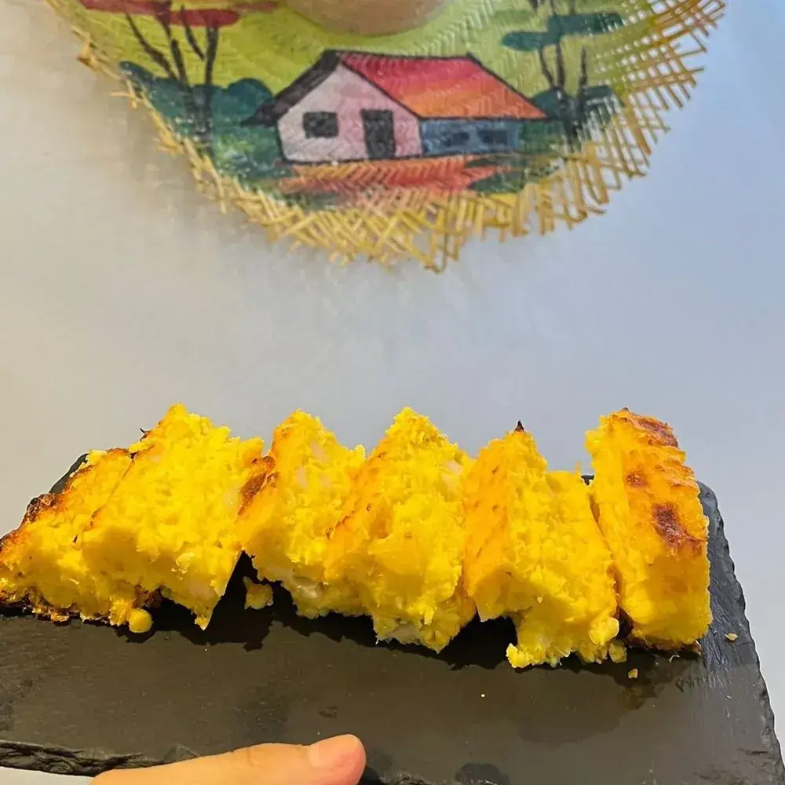
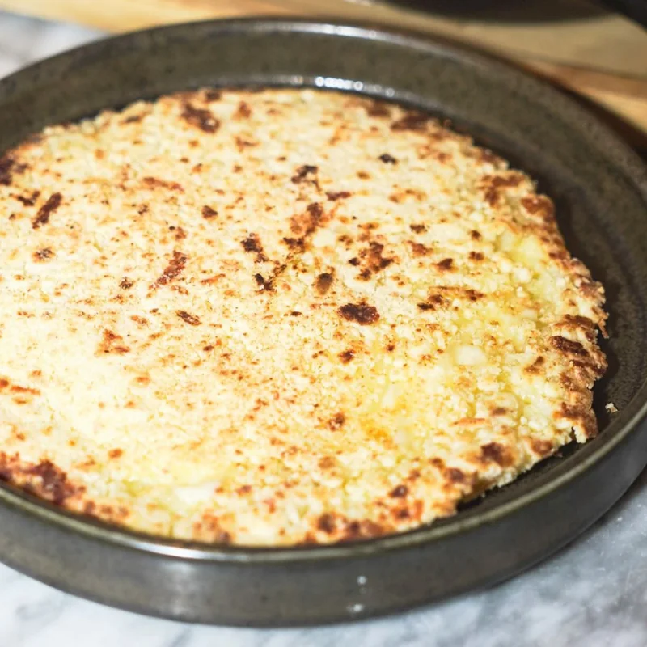
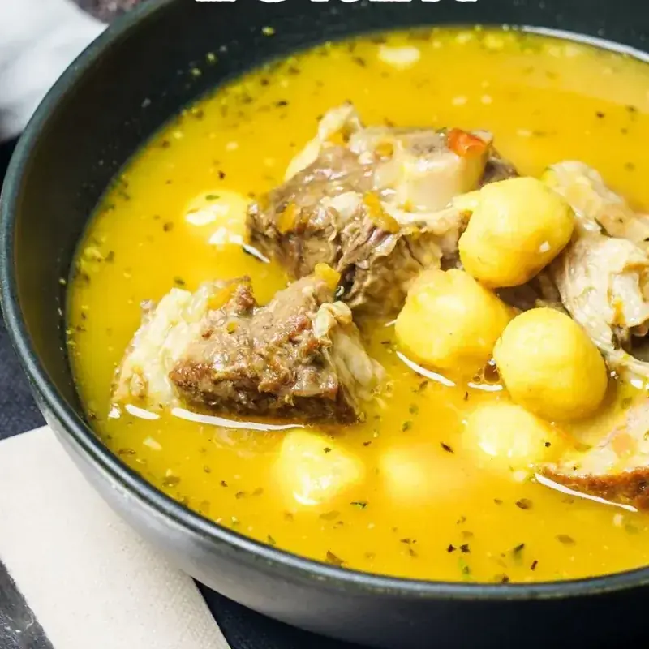
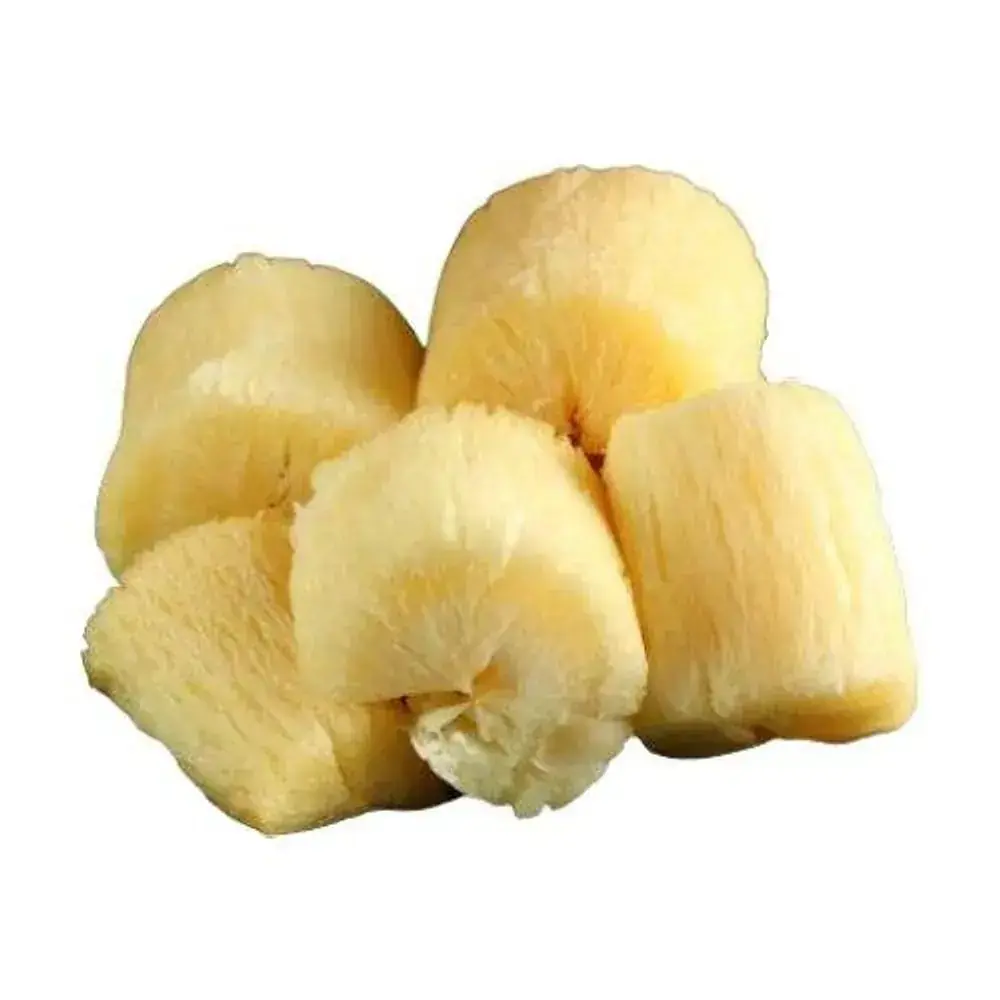
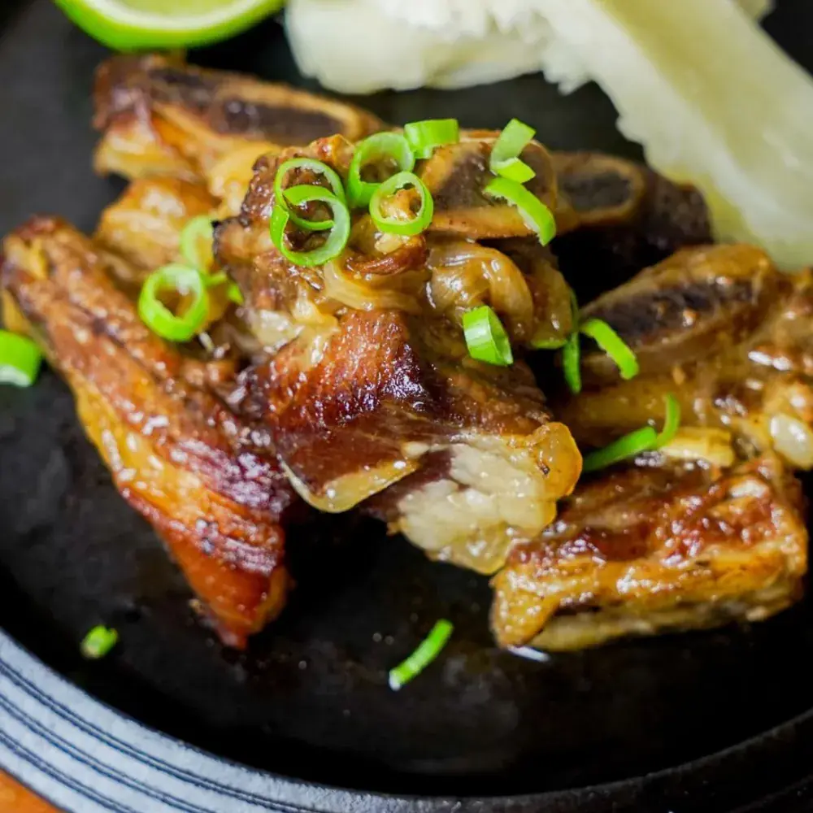
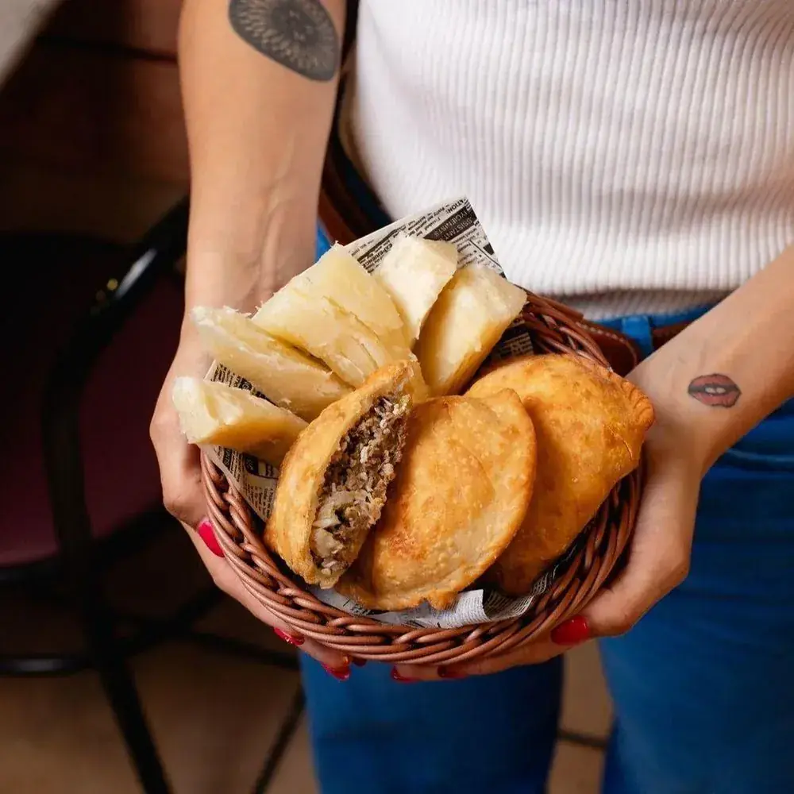
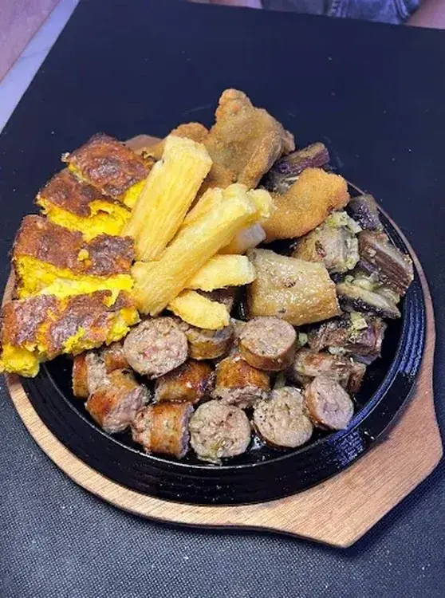
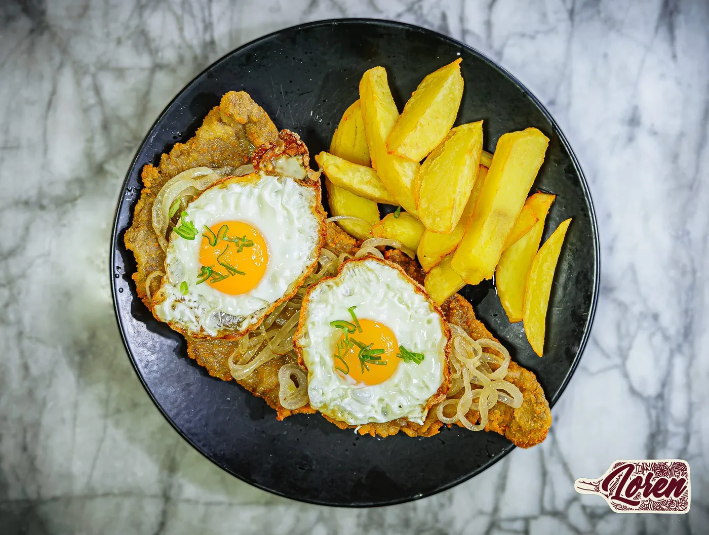

Avati
El maíz
Tierno (choclo) o en harina. Es la base de la chipa guazú, la sopa paraguaya y las bolitas del vorí vorí.
Chipa guazúSopa paraguayaVorí voríEmpanada de choclo
Maíz, mandioca y queso. Con esos tres ingredientes, la sabiduría guaraní y siglos de mestizaje, Paraguay creó una de las cocinas más sabrosas —y menos conocidas— de Sudamérica. Aquí te la presentamos plato a plato.



Si entiendes estos tres ingredientes, entiendes Paraguay. Están en casi todo lo que cocinamos y muchos de nuestros clásicos se elaboran sin trigo.
Tierno (choclo) o en harina. Es la base de la chipa guazú, la sopa paraguaya y las bolitas del vorí vorí.

La yuca. Acompaña cada comida como aquí el pan, y de su almidón nace el mbejú. Frita, hervida o salteada.

Fresco, tierno, en cuajada. Da jugosidad a la sopa paraguaya, se funde en el mbejú y se esconde en las bolitas del vorí.
Pulsa el altavoz para escuchar cómo se pronuncia cada nombre (aunque si lo dices mal, te entendemos igual).
Un pastel horneado de choclo (maíz tierno) que queda esponjoso por dentro y dorado por fuera. “Guazú” significa “grande” en guaraní: es la versión en fuente de la chipa.

A pesar del nombre, es un bizcocho salado de maíz. Cuenta la leyenda que la cocinera del presidente Carlos Antonio López echó demasiada harina de maíz a una sopa… y el “error” se convirtió en plato nacional.
Una torta a la plancha de almidón de mandioca de herencia guaraní. Nuestro reel enseñando cómo lo hacemos superó los 2.400 “me gusta”.

Un caldo de ternera o de gallina con bolitas de harina de maíz y queso. El nombre viene de “bolita”. Con este plato Loren llevó a Paraguay al Mundial de Comidas de Ibai Llanos.

Carne de ternera hecha despacio en la olla, hasta que queda tierna por dentro y dorada por fuera. Un clásico de la cocina casera y ahora uno de nuestros especiales del fin de semana.

Una sopa espesa de carne machacada, de las más queridas de la cocina paraguaya. Con el profe de guaraní Mbo'ehára Marce contamos en Instagram el origen de su nombre.
Un salteado de mandioca, de los platos más pedidos para compartir.

Masa casera y relleno jugoso. Son el plato que más aparece en nuestras reseñas de Google.

La mesa paraguaya de domingo, servida humeante en brasero.

En Paraguay la milanesa es casi un plato nacional. Aquí la empanamos al momento y la servimos en raciones que desbordan el plato.
Tres rutas pensadas por Loren para que descubras lo mejor de Paraguay en una sola visita, según con quién vengas.
Un aperitivo típico, una milanesa de las grandes y un refresco brasileño.
La degustación más completa: los tres clásicos, yuca brava y una milanesa para compartir.
La mesa paraguaya completa: empanadas, picada completa y clásicos para todos.
Totales orientativos calculados con los precios de la carta. Bebidas no incluidas salvo indicación.
Maíz, queso, cebolla y huevos, a mano y al horno hasta que sale la costra dorada. Dale al play con el sonido activado y te lo contamos desde la cocina.
Verla en la cartaPara unas 6 raciones. Es la receta tradicional para hacerla en casa; la de Loren tiene sus secretos, y para probarla está en la carta.
Las preguntas que más nos hacen en la barra sobre la comida paraguaya.
Una cocina de maíz, mandioca, queso y carne que nace de la mezcla de la tradición guaraní y la española. Sus platos más conocidos son la chipa guazú, la sopa paraguaya, el mbejú, el vorí vorí, las empanadas y la milanesa.
La chipa es un panecillo de almidón de mandioca y queso que en Paraguay se toma en el desayuno o de camino. La chipa guazú (“chipa grande”) es otra cosa: un pastel de maíz tierno, huevo y queso que se hornea en fuente y se sirve en porciones.
Porque es un bizcocho salado de harina de maíz, queso, cebolla y leche que se come con tenedor. La leyenda cuenta que nació de un error en la cocina del presidente Carlos Antonio López, cuando a una sopa se le fue la mano con la harina.
Se dice “borí borí”. Es un caldo de ternera o de gallina con bolitas de harina de maíz y queso, el plato con el que Loren representó a Paraguay en el Mundial de Comidas de Ibai Llanos. Lo preparamos los fines de semana, en cantidad limitada.
Muchos clásicos se hacen con maíz y mandioca en lugar de trigo, como la chipa guazú, la sopa paraguaya o el mbejú. En la carta los marcamos como “Sin trigo*”, pero se elaboran en una cocina que también trabaja con trigo: si eres celíaco o tienes alguna alergia, avísanos antes de pedir.
En Loren Restobar, en el Carrer de la Muntanya 115, en Camp de l'Arpa (metro L5 Camp de l'Arpa o L1/L2 Clot). Cocinamos comida paraguaya casera desde 2020, de miércoles a domingo, y también la llevamos a casa por Glovo y Uber Eats. Mira el horario y cómo llegar.
Para empezar, chipa guazú, sopa paraguaya y un mbejú relleno de queso; después, una empanada de ternera y una milanesa a caballo. Si venís en grupo, la picada completa. Y si dudas, mira la carta completa.
La bebida nacional es el tereré: yerba mate con agua bien fría, que se comparte a todas horas. Con la comida, en Loren triunfan la Guaraná y la Pilsen, la cerveza de Paraguay.
Toda la carta te espera, en sala o a domicilio.
Elige tu app y en minutos tienes Paraguay en la mesa.